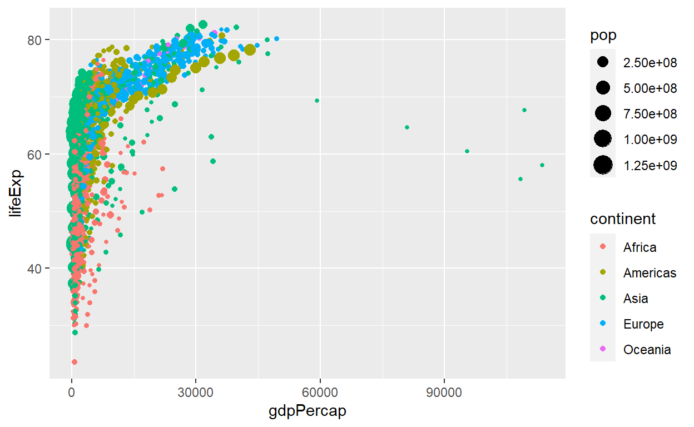

Introducción
Vamos a utilizar el paquete ggplot2 que implementa la
gramática de los gráficos desarrollada por Leland Wilkinson.
Esta gramática define un conjunto de reglas para construir
gráficos estadísticos combinando diferentes tipos de
capas.
La gramática nos dice que:
Un gráfico es un mapeo de variables de datos a atributos estéticos de objetos geométricos.
Específicamente, podemos dividir un gráfico en los siguientes tres componentes esenciales:
Datos (data, en inglés): el conjunto de datos compuesto por variables que mapeamos.
Geometría (geom, por geometry en inglés): el objeto geométrico en cuestión. Se refiere al tipo de objeto que compone el gráfico, por ejemplo: puntos, líneas y barras.
Estética (aes, por aesthetic en inglés): atributos estéticos del objeto geométrico. Por ejemplo, posición x, y, color, forma y tamaño. Cada atributo estético se puede asignar a una variable en nuestro conjunto de datos.
Ejemplo de la gramática en un gráfico
Vamos a ver un ejemplo de estos componentes en un gráfico, para ello
vamos a utilizar el paquete gapminder que ya instalamos y
cargamos por ti.
Para ver los datos de gapminder, escribe
gapminder en el bloque de código que aparece abajo y luego
haz click en el botón “Ejecutar código”.
gapminderMensaje
Buen trabajo! Usaremos fragmentos de código interactivos como este en el tutorial. Siempre que encuentres uno, puedes hacer clic en Ejecutar código para ejecutar el código escrito. Si hay un botón Pista o Solución, puedes hacer clic para recibir ayuda y/o ver la respuesta.
A graficar
Veamos un gráfico a través de la gramática de los gráficos.
El siguiente gráfico está realizado con los datos de
gapminder, intentemos reconocer que variables y secciones
corresponden a la gramática de gráficos:
ggplot(data = gapminder,
mapping = aes(x = gdpPercap, y = lifeExp, color = continent, size = pop)) +
geom_point()
Mirando el código y el gráfico, podemos indentificar que:
- Datos: el nombre del conjunto de datos (gapminder) se
asigna al atributo
data - Estética: el eje
xrepresenta la variablegdpPercap, el ejeyrepresenta la variablelifeExp, elcolor(ocolour) representa la variablecontinenty el tamaño (size) representa la variable población. - Geometría: generamos un gráfico de puntos, como indica la función
geom_point()
Cambiemos algunas propiedades
Supongamos que queremos cambiar los ejes del gráfico, ¿cómo cambiarías el código anterior para lograr ese cambio?
ggplot(data = gapminder,
mapping = aes(x = gdpPercap, y = lifeExp, color = continent, size = pop))+
geom_point()Recuerda que los ejes están representados por las letras x (horizontal) e y (vertical)Mensaje
Bien hecho!, además del gráfico de puntos, indicado en el código
anterior por geom_point(), tenemos otros tipos de gráficos,
por ejemplo gráficos de líneas, de barras, de áreas o histogramas.
Hagamos un gráfico de lineas
Vamos a realizar otros gráficos utilizando los datos en
gapminder. Para generar el gráfico de lineas, vamos a ver
la evolución de la población de Argentina en la serie de datos
disponible.
Ya hemos filtrado los datos necesarios en el dataset
Argentina y está disponible en el entorno para que lo
puedas utilizar. A continuación te mostramos los primeros registros de
este dataset.
Modifica el siguiente código para generar un gráfico que lineas que nos muestre los años en el eje x y la población en el eje y.
ggplot(data = ________,
mapping = aes(x = _______, y = ________)) +
geom_line()- El dataset se llama Argentina
- La variable que contiene los años se llama year
- La variable que contiene la población se llama popggplot(data = Argentina,
mapping = aes(x = year, y = pop)) +
geom_line()Hagamos un gráfico de barras
Hay dos formas de hacer un gráfico de barras en ggplot2,
una forma es utilizando geom_bar() y otra es utilizando
geom_col().
geom_bar(): utilizamos esta geometría cuando no tenemos una variable que contenga el cálculo de la cantidad o frecuencia de la variable categórica que queremos gráficar. El cálculo se realizará para generar el gráfico.geom_col(): utilizamos esta geometría cuando tenemos en nuestro set de datos una variable con el cálculo de la cantidad o frecuencia de la variable categórica que queremos graficar, con la estética del eje y asignada a la variable que tiene esa cantidad.
Vamos a transformar el gráfico anterior a barras. ¿Cómo realizarias este cambio?, ¿cuál de las dos opciones de geometrías utilizarías?
Modifica el siguiente código para generar un gráfico de barras que nos muestre los años en el eje x y la población en el eje y.
ggplot(data = Argentina,
mapping = aes(x = year, y = pop)) +
geom_______()La variable pop ya contiene la cantidad de la población calculadaggplot(data = Argentina,
mapping = aes(x = year, y = pop)) +
geom_col()Mensaje
Bien hecho!, utilizamos geom_col() porque ya contamos
con una variable que tiene calculada la cantidad que queremos
representar.
Hagamos un gráfico de área
Vamos a transformar el gráfico anterior a áreas.
Modifica el siguiente código para generar un gráfico de áreas que nos muestre los años en el eje x y la población en el eje y.
ggplot(data = Argentina,
mapping = aes(x = year, y = pop)) +
geom_______()Recuerda que el nombre de la geometría es la palabra en inglés, en linea es geom_line(), en barras es geom_bar(), para área es geom_ ...ggplot(data = Argentina,
mapping = aes(x = year, y = pop)) +
geom_area()Fuentes
Esperamos que esta pequeña introducción a los gráficos en R te sea de utilidad. A continuación te dejamos una serie de materiales que pueden resultar muy útiles para continuar aprendiendo y en los cuales basamos este tutorial.
Licencia
Este curso se comparte bajo la licencia Creative Commons Attribution-ShareAlike 4.0 International License y fue realizado por Yanina Bellini Saibene